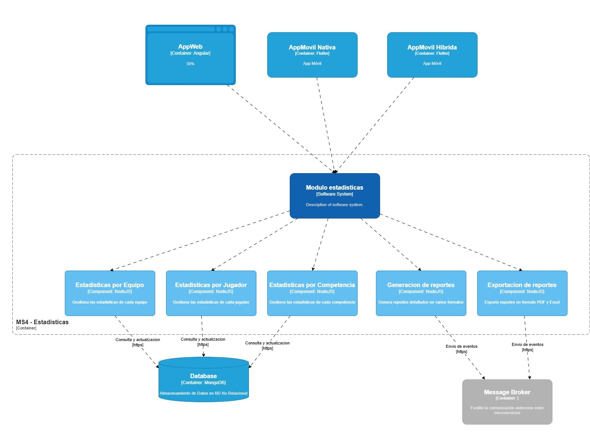

Documentación del Módulo de Estadísticas
1 Introducción
El módulo de estadísticas es un componente clave de SportBoard que se encarga de calcular, analizar y visualizar datos deportivos. Proporciona funcionalidades avanzadas para el seguimiento del rendimiento de jugadores, equipos y competencias.
1.1 Funcionalidades Principales
1.1.1 1. Cálculo de Estadísticas
- Promedios de métricas deportivas (puntos, goles, asistencias, tarjetas, posesión)
- Estadísticas individuales por jugador
- Estadísticas colectivas por equipo
- Cálculo de porcentajes de rendimiento y eficiencia
- Comparación de desempeño entre jugadores y equipos
1.1.2 2. Generación de Reportes
- Reportes detallados por jugador, equipo y competencia
- Reportes de tendencias y comparativas
- Exportación en múltiples formatos (PDF, Excel, CSV)
- Generación automática de reportes periódicos
- Personalización de reportes según necesidades del usuario
1.1.3 3. Análisis de Tendencias
- Seguimiento de patrones de rendimiento
- Análisis histórico de datos deportivos
- Predicciones y proyecciones basadas en datos
- Visualización de tendencias mediante gráficos interactivos
1.2 API del Módulo
1.2.1 Endpoints
1.2.1.1 GET /api/statistics/average
Calcula el promedio de una métrica específica.
Parámetros: - metric: Métrica a calcular (puntos, goles, posesión, etc.) - player_id (opcional): ID del jugador - team_id (opcional): ID del equipo
Respuesta:
{
"average": 25.5,
"metric": "puntos",
"period": "temporada_2023"
}1.2.1.2 POST /api/statistics/report
Genera un reporte estadístico personalizado.
Cuerpo de la Petición:
{
"type": "player",
"id": 123,
"metrics": ["puntos", "asistencias"],
"period": "2023-01-01/2023-12-31"
}Ejemplo de Respuesta:
{
"report_id": 789,
"status": "generado",
"download_url": "http://localhost:8000/reports/789.pdf"
}1.3 Ejemplos de Uso
1.3.1 Obtener Promedio de Puntos
import requests
response = requests.get(
'http://localhost:8000/api/statistics/average',
params={
'metric': 'puntos',
'player_id': 123
}
)
print(response.json())1.3.2 Generar Reporte de Equipo
import requests
data = {
'type': 'team',
'id': 456,
'metrics': ['goles', 'posesion'],
'period': '2023-01'
}
response = requests.post(
'http://localhost:8000/api/statistics/report',
json=data
)
print(response.json())1.4 Configuración del Módulo
1.4.1 Variables de Entorno
STATISTICS_DB_HOST=localhost
STATISTICS_DB_PORT=5432
STATISTICS_API_KEY=your_api_key1.4.2 Docker
FROM python:3.9
WORKDIR /app
COPY requirements.txt .
RUN pip install --no-cache-dir -r requirements.txt
COPY . .
CMD ["python", "main.py"]1.5 Integración con Otros Módulos
- Módulo de Competencias: Obtención de datos de partidos y torneos.
- Módulo de Usuarios: Autenticación y autorización de usuarios.
- Módulo de Tiempo Real: Generación de estadísticas en vivo durante los eventos deportivos.
1.6 Consideraciones de Rendimiento
- Implementación de caché para consultas frecuentes.
- Optimización de consultas a la base de datos.
- Manejo eficiente de memoria para grandes volúmenes de datos.
- Escalabilidad mediante procesamiento distribuido si es necesario.
1.7 Seguridad y Control de Acceso
- Autenticación mediante API Keys o JWT.
- Control de acceso basado en roles (jugadores, entrenadores, analistas, administradores).
- Cifrado de datos sensibles en la base de datos.
1.8 Diagrama C4
